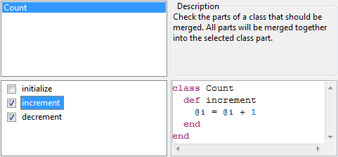

Merge Class Parts in File
Description
In Ruby it is allowed to declare a class at several places in the same or in different files.
Class declarations following after a first one will logically be added to the first class
declaration. This language feature is called open classes.
So an instance of a Ruby class will provide the combined functionality of all the class
declaration parts even when they are spread over several files.
The Merge Ruby Class Parts refactoring pulls all those class declarations together and
merges them into one single part. This might be useful to get a better overview in a
larger Ruby project.
This refactoring works for merging several class parts in the same file.
Conditions
The active file needs to contain at least two parts of the same class definition
or the refactoring cannot be invoked.
Options

First the class that should be merged has to be selected. All classes that have
several parts in the current file are listed in the upper left box.
After selecting the class all its parts are listed in the box below. Where they
can be checked. All checked parts are merged when executing the refactoring. The
target part is the selected one. The parts have the name of their first method.
On the right side the code of the selected class part can be seen.

Feedback